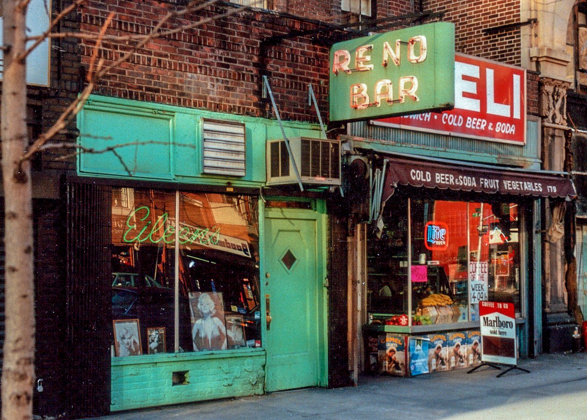

Revisiting this photo from a 2015 post with a fresh edit but the original caption below. BTW the link still works, and it’s worth it. The original post is here.
“Eileen’s Reno Bar, on Second Avenue, from my recently scanned prints from about 1989. I was attracted by the aesthetics in deciding to photograph the place, especially the perfect neon sign (extra points for being lit during the day). This made me pretty much as clueless as the walk-ins described by Gary Indiana in his somewhat NSFW essay on the East Village scene of the day, “One Brief, Scuzzy Moment” in which the Reno Bar played a role: ‘In a strictly hedonistic way, Eileen’s Reno Bar was integral to the East Village community.’“